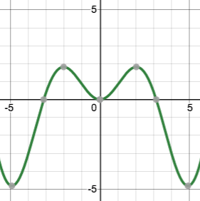
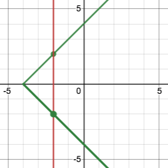

The Vertical Line Test
(Also available in Pyret)
Students learn to distinguish functions from other relations.
|
Lesson Goals |
Students will be able to:
|
|
Student-Facing Lesson Goals |
|
|
Materials |
|
|
Preparation |
|
function-
a relation from a set of inputs to a set of possible outputs, where each input is related to exactly one output
vertical line test-
a strategy for determining whether or not a graph represents a function by confirming that no vertical line can be drawn to reveal that an x-value corresponds to more than one y-value
| Functions Are Reliable | 10 minutes |
Overview
Students work collaboratively to generate visual representations of functions, using rules to make coordinate pairs.
Launch
Functions are a way of describing a certain kind of relationship.
Functions are reliable. If we give them what they need, they produce the same thing with that same collection of inputs every time.
You are already familiar with lots of relationships. Time worked is related to money earned. The speed of a car is related to the gas it consumes per miles driven. Not all relationships are functions. What kind of relationships are functions, exactly? That’s what we’re going to find out…
Investigate
Just as we can give the rectangle function inputs and it will produce an image, we can make @voab{graphs} of functions by feeding inputs (x-values) into a rule that produces outputs (y-values). The resulting x-y pairs describe the location of points that will satisfy the rule. We can repeat the process with an infinite number of inputs, plotting the outputs as a line or curve on a graph.
-
On each slide of the Interactive Function Activity (Google), we’ll see a graph and a rule.
-
Each of you will choose an x-value that is within the domain of the graph, apply the rule to your x-value to get a y-value, and then place a dot on the graph whose coordinates are the x you put in and the y you got back.
-
When all of our dots appear on the screen together, we’ll end up with a visual representation of the function!
You might just want to do a few of these slides, or you might do lots of them.
Synthesize
-
How can we make a graph of a function from its rule?
-
Are there curves or lines that a function could not make? Why or why not?
🔗Identifying Functions from Graphs
Overview
Students learn to use the vertical line test to determine whether or not a graph is a function. Students have already seen all kinds of functions! The subset of functions that are Number->Number can be graphed in 2 dimensions, with the Domain along the x-axis and the Range along the y-axis. The Vertical Line Test is a special trick that only works for this subset of functions.
Launch
We can write functions that take in an x-value and produce a y-value. Different inputs can yield the same outputs. But each input can only be associated with one output.
We can test a graph to see whether or not it’s a function using the "vertical line test". Imagine overlaying a series of vertical lines on the graph. If the graph represents a function, none of the vertical lines will cross the graph at more than one point. If there is any vertical line that can be drawn that would intersect more than one point on the graph, it means the same input can have more than one output and the relationship is not a function.
Passes the Vertical Line Test -> Is a Function |
Fails the Vertical Line Test -> Is Not a Function |
 |
 |
{kind=link}
{kind=link}
Investigate
-
Turn to Identifying Functions from Graphs and use a straight edge and a pencil to draw vertical lines on each of the graphs to help you determine whether or not they are functions.
-
When you finish, go on to Identifying Functions from Graphs (continued).
-
Once everyone has completed the first page, we will turn to Notice and Wonder - Functions.
As students work, circulate around the room and make sure that they are actually drawing vertical lines on the graphs. Some students may benefit from circling the point where each vertical line intersects the graph.
Synthesize
Confirm that students have correctly identified which graphs represent functions.
-
What did you Notice?
-
Functions could be lines, curves, v-shaped or scatterplots! Answers will vary.
-
-
What did you Wonder?
-
Why might some scatterplots represent functions and others not? Are there other forms that functions can take? How do you end up with a circle on a graph? Answers will vary.
-
🔗Identifying Functions from Tables
Overview
Students apply their understanding of how to use the vertical line test on graphs to learn to recognize whether or not tables are functions.
Launch
Turn to How Tables Fail the Vertical Line Test and follow the directions.
Circulate around the room verifying that students are remembering how to use the vertical line test and correctly identifying which tables represent functions.
-
How can we identify whether or not a table of values represents a function?
-
If a table has more than one y-value (or output) for the same x-value (or input), it cannot represent a function.
-
Investigate
-
Turn to Identifying Functions from Tables.
-
Look at the values in each table carefully to determine whether or not the table represents a function.
-
If it’s not a function, circle or highlight the points that let you know it can’t be a function.
-
When you’re done, turn to Notice and Wonder - Functions and add any new Notices or Wonderings you may have.
-
Then turn to Identifying Functions from Tables & Graphs.
As students work, circulate around the room and make sure that they are actually circling or highlighting the points on the tables that tell them that the table doesn’t represent a function.
Synthesize
Confirm that students have correctly identified which graphs represent functions, and then lead a discussion on the activities above.
-
What did you Notice?
-
Answers will vary. It can still be a function if y-values repeat. It didn’t matter whether or not the x-values followed a pattern. It was easier for me to read the tables when the x-values were in order.
-
-
What did you Wonder?
-
Answeres will vary. Why weren’t the x-values always in order? If the points were on a graph, would they be connected? Can there ever be decimal values for x and y? What would these tables look like on a graph?
-
These materials were developed partly through support of the National Science Foundation,
(awards 1042210, 1535276, 1648684, and 1738598).  Bootstrap by the Bootstrap Community is licensed under a Creative Commons 4.0 Unported License. This license does not grant permission to run training or professional development. Offering training or professional development with materials substantially derived from Bootstrap must be approved in writing by a Bootstrap Director. Permissions beyond the scope of this license, such as to run training, may be available by contacting contact@BootstrapWorld.org.
Bootstrap by the Bootstrap Community is licensed under a Creative Commons 4.0 Unported License. This license does not grant permission to run training or professional development. Offering training or professional development with materials substantially derived from Bootstrap must be approved in writing by a Bootstrap Director. Permissions beyond the scope of this license, such as to run training, may be available by contacting contact@BootstrapWorld.org.